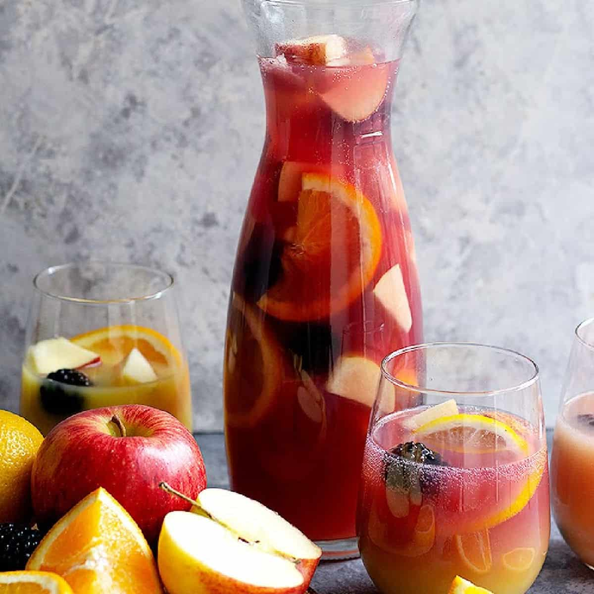

Easy Sangria

Easy Sangria Ingredients
- Red Wine
- Fruit
- Spices
- Sugar
- Soda
Steps
- Make a simple syrup. I like to use a 1:1 ratio of water to granulated sugar by volume. Let it cool while you prepare the rest of the sangria.
- Peel and juice the lemons.
- Peel and juice the oranges.
- Pour the wine into a big pitcher or pot and add the citrus juice and rinds. Add simple syrup to taste.
- Stir everything until it's well combined.
- Add the spices, any additional fruit, and brandy or alcohol (if using).
- Voila! You made traditional Spanish sangria to enjoy with your favorite tapas. If you want to use soda, add it right before drinking.